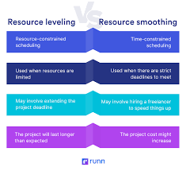
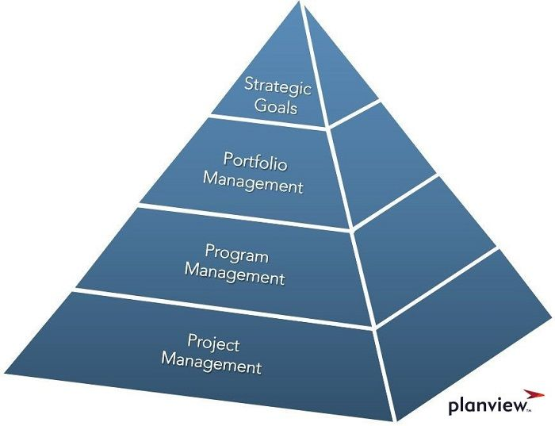

What is Resource Optimization? Resource Optimization is the blanket term to describe the way in which we use our resources to the most efficient manner possible. An example could be if you have 'x' amount of workers and 'y' amount of tasks, how do you most optimally assign workers to these tasks to complete them? In relation to project management, this is the way in which you use your resources in the best way to accomplish the goal/complete the project in a timely mannger.
There are three different techniques specific to resource optimizaiton, also known as 'Resource Optimization Algorithms'. These are: Resource leveling, Resource smoothing, and Reverse Resource Allocation.

The Three Techniques
Resource Leveling: This technique is something that nearly all project managers will need to utilize at some point in their career. Resource leveling is the technique wherein you, as a project manager, may be shorthanded in resources. Due to your shorthanded staff/budget, you may need to adjust deadlines/start dates and act accordingly. An example could be a prjoect that is trying to create a video game wherein the scope is pretty broad, and after establishing requirements for the project, the project manager realizes that given his staff, he is not going to be able to meet the deadline if he starts at the established start date. Due to this, he can either make the start date sooner or push back the deadline (more often than not the latter). This can be advantageous in the way that it does solve the problem, however it can aggrivate customers/stakeholders due to the project not being finished as soon as they wanted.
Resource Smoothing: Resource smoothing is another technique that involves issues with resources, though this time it is specifically with time. This technique prioritizes getting the project finished on time (unlike resource leveling), so this can be more advantageous for projects wherein the deadline must be met. This can cause workers to be overworked or burned out by the end of the project, however it will keep the stakeholders happy (as long as the project is actually completed in full). A big disadvantage of this technique is that some features may need to be put on the backburner in favor of some necessary functions for the project to actually work. Also, since the project is on a tight schedule, any delays in this schedule can be devestating for the overall success of the project's development.
Reverse Resource allocation: The name of this technique can be confusing, but it is really quite simple. This technique is the idea that when a project is on a tight schedule, it is best to work from the most important tasks to the least important tasks (so backwards), hence the 'reverse' part of the technique. The reasoning behind this is that if you don't finish everything by the deadline, at least all of the necessary parts are going to be done and the 'least priority' things can be patched in post-release. An example could be another game development project wherein the team realizes that the deadline set forth by the stakeholders is far too soon for the actual scope of the project to be complete, so they set the priority of tasks and work back to front. This way, they can get a game put out on the deadline that functions as needed, but some smaller features may need to be added post release. A disadvantage of this technique is that, though the stakeholders will be happy, customers may be disappointed in the half-finished product, which can bring the company a lot of backlash.
Portfolio Management: Many project managers have multiple projects at any given time, thus making the necessity of a 'portfolio' necessary. A portfolio is basically a 'folder' that contains all of the projects a project manager is working on at any given time, and these could be structured in an order of importance/deliver date, etc. A project manager needs to manage their portfolio ot be successful. An important way to manage a portfolio is by watching the budgets of each project and makign sure they are all staying within budget/scope. Projects are an ever changing thing, so there are a lot of moving parts inside of the portfolio, so it is important to constantly monitor ones' portfolio to be able to track the progress of each project and maintain a constant workflow throughout each project.

Why Do I Need to Do This?
There are many reasons a project manager might want to implement these techniques into their own team. Resource allocation is pretty much a necessity for any team to be successful in the long run, as eventually you will take on a project that has problems that can only be solved via these methods. By implementing these methods into your routine for a project assessment, you will be better equipped to be able to address issues related to resources and more knowledgeable in the bigger picture. Many projects fail because leaders forget to watch the resources and how they are being used, so by being more knowledgeable of the pitfalls that can come along, you will be one step ahead of everybody else.
Customer Satisfaction: Like many techniques being taught throughout these blogs, this technique is incredibly beneficial for customer satisfaction, as it allows the project manager to be able to evolve the project based on its' necessities. A project manager could either speed up the project's timeline by more efficiently allocating resources/manpower, push back the deadline to provide a more finished and polished product (as long as this is done in a proper manner), or many other things.
Increasing Project Value: By implementing strategies within Resource Optimization, a project's value will go up by the better optimized allocation of resources. In essence, by allocating resources more effectively, you are cutting down on the budget allowing for more overhead in the project, leading to more profits for the manager and the team as a whole. By allowing developers to work in a more efficient manner, a project manager could incite better work by allowing for 'bonuses' throughout the year to top-developers in the company. This could be done by monitoring the amount of code being added by each specific developer, tasks completed by specific developers, and so on. Considering salary and wage is one of the biggest driving factors for workers' enthusiasm/motivation, this can be a powerful tool to implement into your own team.